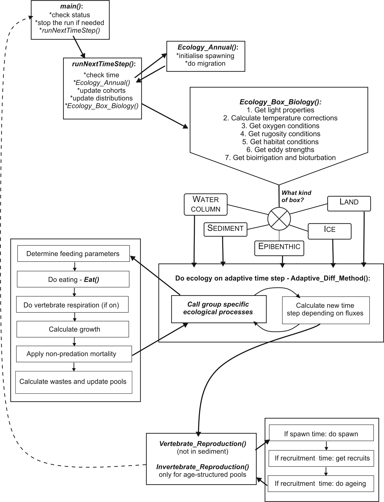

14. FINAL OVERVIEW OF ECOLOGY ROUTINES
The schematic representation below gives a brief overview of the key ecology routines and the order they are called. The Harvest and socio-economic routines are not included in this representation.
The main() routine controls the entire run, and calls the runNextTimeStep() if the run should continue (has not been terminated or the last time step has not been reached yet). The runNextTimeStep() checks the time of the year and initiaties any relevant annual routines, such as migration or spawning (they are executed later, but the initiation is started here). It then calls the Ecology_Box_Biology() routine to run all ecological processes in a given cell. The Ecology_Box_Biology() assesses the environmental conditions (light, oxygen, habitat, eddies) and calls for routines that should be executed in each of the five box types: water column (not in contact with the sediment layer), sediment (not in contact with the water column), epibenthic (bottom water layer and top sediment layer), ice and land. Within each of these boxes Atlantis first runs the main ecological processes, such as feeding, maintenance (if used), growth, nutrient cycling, waste production. These processes are run on an adaptive time step, which means that for the smallest groups (bacteria, phytoplankton) the processes might have to be dynamically repeated many times within a single model timestep (see introduction in Chapter 6 on adaptive time step). Once these processes are completed, Atlantis then runs the required annual ecology processes, such as reproduction, recruitment and ageing.
The land and ice boxes have only been added recently and are not discussed in details below (the execution of ice is quite similar to the water column, while the land is like the epibenthic layers).
Atlantis runs the water column, sediment or epibenthic processes depending on what kind of interactions are expected (epibenthic processes are run only in the epibenthic boxes). The water column, sediment and epibenthic processes are summarised below.

Table 27. List of key ecological processes run in the three main distribution types: water colum, sediment, and epibenthic layer. List of the pools tracked in the three types is given in table 8.
PP – phytoplankton (including dinoflagelates), ZP – zooplankton, MA – macroalgae and seagrasses, BI – benthic invertebrates, PI – cephalopods and prawns (nektonic pelagic invertebrates), VE – vertebrates, MB - microphytobenthos
| Process | N | Si | PB | BB | DL | DR | PP | ZP | MA | BI | PI | VE | MB |
|---|---|---|---|---|---|---|---|---|---|---|---|---|---|
| Water column processes | |||||||||||||
| Used by phytoplankton | + | + | |||||||||||
| Used by bacteria | + | + | + | ||||||||||
| Input from wastes | + | + | + | + | |||||||||
| Mineralisation | + | + | + | ||||||||||
| Nitrification | + | + | |||||||||||
| Oxygen production | + | ||||||||||||
| Nutrient uptake | + | ||||||||||||
| Lysis (nutrient stress) | + | ||||||||||||
| Feeding | + | + | + | + | |||||||||
| Growth | + | + | + | + | + | ||||||||
| Respiration | (+) | ||||||||||||
| Predation mortality/losses | + | + | + | + | + | + | + | ||||||
| Other mortality | + | + | + | + | + | ||||||||
| Waste production | + | + | + | + | + | ||||||||
| Sediment processes | |||||||||||||
| Process | N | Si | PB | BB | DL | DR | PP | ZP | MA | BI | PI | VE | MB |
| Used by microphytobenthos | + | + | |||||||||||
| Used by bacteria | + | ||||||||||||
| Input from wastes | + | + | + | + | |||||||||
| Mineralisation | + | + | + | ||||||||||
| Nitrification | + | + | |||||||||||
| Denitrification | + | + | |||||||||||
| Oxygen production | + | ||||||||||||
| Nutrient uptake | + | ||||||||||||
| Feeding | + | + | |||||||||||
| Growth | + | + | + | ||||||||||
| Predation mortality/losses | + | + | + | + | + | ||||||||
| Other mortality | + | + | + | + | |||||||||
| Waste production | + | + | |||||||||||
| Bio turbation/irrigation | + | ||||||||||||
| Epibenthic processes | |||||||||||||
| Process | N | Si | PB | BB | DL | DR | PP | ZP | MA | BI | PI | VE | MB |
| Used by macrophytes | + | ||||||||||||
| Input from wastes | + | + | |||||||||||
| Mineralisation | + | + | |||||||||||
| Oxygen production | + | ||||||||||||
| Nutrient uptake | + | ||||||||||||
| Feeding | + | ||||||||||||
| Growth | + | + | |||||||||||
| Predation mortality/losses | + | + | + | + | |||||||||
| Other mortality | + | + | |||||||||||
| Waste production | + | ||||||||||||
| Bio turbation/irrigation | + | ||||||||||||
| Feature | Assumptions and/or formulation notes |
| General features | |
|
mg N/m3 |
|
nutrients, temperature and physics on interannual, seasonal, tidal frequencies |
|
functional group (with a small number of individual species) |
|
follow the dynamics of the entire biomass pool of the functional group (or species) in the cell |
|
follow the biomass dynamics (structural and reserve weight) of the ‘average individual’ for the functional group (or species) in the cell and the number of individuals in the cell |
|
adaptive* daily or diurnal time step |
| Process related | |
|
yes, simple exchange between layers |
|
type II (asymptotic), with an availability parameter which can be habitat dependent |
|
five general sets of rate of change equations used (autrophs, biomass pool and age structured consumer, bacteria, inanimate) |
|
general: only growth, mortality and excretion explicit |
|
optimal irradiance fixed |
|
yes, for dinoflagellates (if present) |
|
external nutrients determine uptake |
|
Redfield |
|
yes |
|
very low background rate included |
|
dynamic, with sediment bacteria |
|
yes |
|
yes (for benthic or demersal groups (and species)) |
|
flexible with the potential for multiple vertical and horizontal cells |
|
yes |
|
yes |
| Model closure | |
|
some top predators are included explicitly, but predators not explicitly included in the foodweb are represented using quadratic mortality terms |
|
linear and quadratic |
| Vertebrate and fisheries related | |
|
multiple age classes (or stages, which equate to life phases), with final age class of each group a “plus group” |
|
target and bycatch groups (and species) |
|
yes |
|
yes |
|
variable, may be via effort limitations, gear limitations, minimum legal size, area or temporal closures and may be based on target or endangered stocks |
|
Beverton-Holt, productivity-based or constant recruitment |
|
depends on recruitment function chosen – may be internal (all the stock within the bay and self-seeds) or external (the reproductive stock outside the bay produces the recruits and the oldest age classes migrate out of the bay to join this stock) |